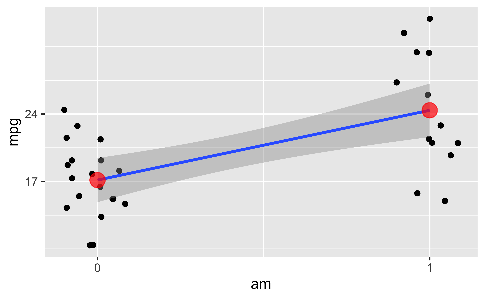
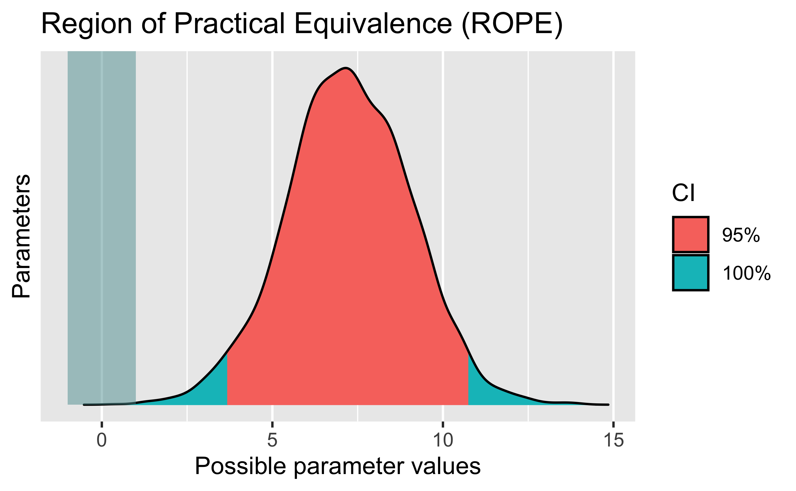
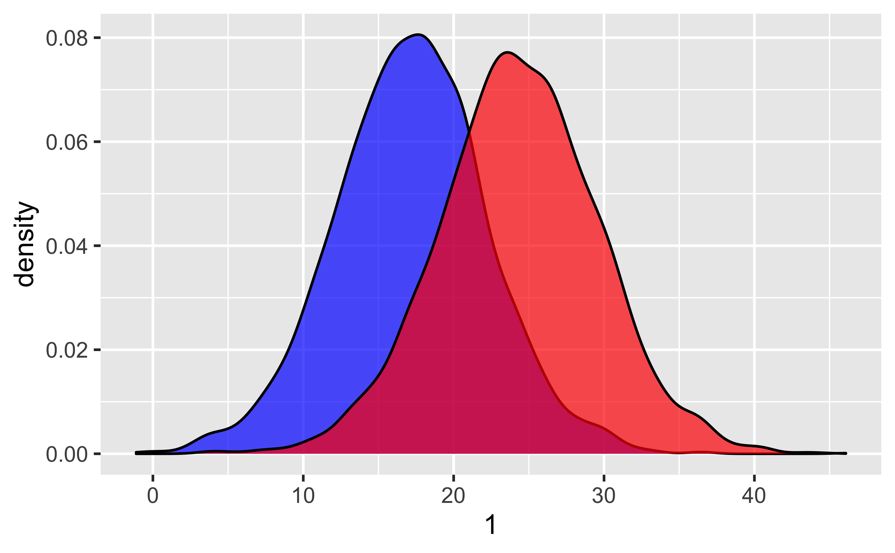
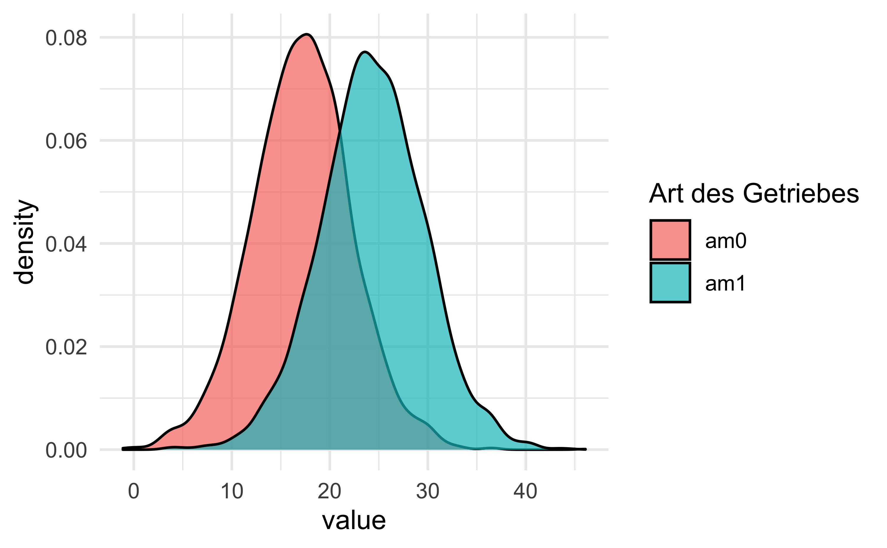

Das ist wieder ein Fünf-Minuten-Bayes-Kurs
Sie würden gerne Bayes lernen und dafür zwischen 1-3 Wochen Zeit investieren? Dann sind Sie hier falsch. Dieser Post zeigt einen Kurzüberblick in leicht fortgechrittenen Bayes-Statistik in fünf Minuten. Naja, ich probiere es jedenfalls.
Forschungsfrage
Sagen wir, uns interessiert folgende Forschungsfrage, die mit Methoden der Inferenz-Statistik untersucht werden soll. In diesem Fall Bayes-Inferenz (nicht Frequentistische Statistik).
Verbrauchen Autos mit Automatik-Getriebe im Durchschnitt mehr Sprit als Autos mit manuellem Getriebe?
- AV: mpg (miles per gallone)
- UV: am (automatic vs. manual)
Die AV ist metrisch. Die UV ist binär. Wir vergleichen also zwei Gruppen, das ist ähnlich zum t-Test.
Vorbereitung
data("mtcars") # Datensatz laden
library(rstanarm) # Funktionen für Bayes-Statistik laden
library(tidyverse) # Für DatenjudoDer Datensatz mtcars ist “fest eingebaut” in R, so dass wir ihn nicht irgendwo herunterladen müssen.
Hilfe zum Datensatz bekommt man so:
help(mtcars) # Hilfe/Codebook zum Datensatz
# Output hier nicht dargestelltVisualisierung
Zwar nicht Gegenstand dieses Posts, aber hilfreich, daher hier nur kurz ein Bild ohne Syntax:

Jeder (leicht verwackelte) Punkt stellt ein Auto dar. Die Line ist die Regressionsgerade. Die roten Punkte sind die Mittelwerte der beiden Gruppen.
Zur Interpretation der Regression
Die einfache Regression (also mit nur einer UV) hat zwei Koeffizienten: Achsenabschnitt und Steigung.
Bei einer binären (zweistufigen) UV bedeutet das:
- Der Achsenabschnitt zeigt den vorhergesagten Wert (der Mittelwert) der 1. Gruppe.
- Die Steigung zeigt den (vorhergesagten) Unterschied der zweiten Gruppe (im Vergleich zur 1. Gruppe).
Der vorhergesagte Wert der zweiten Gruppe ergibt sich also als Summe von Achsenabschnitt plus Steigung.
Modell berechnen
Nutzen wir das allgemeine (oder verallgemeinerte) lineare Modell, um unsere Forschungsfrage zu beantworten. Anders gesagt: Wir berechnen einen Regression. Das schöne an einer Regression ist, sie passt1 auf die meisten Probleme, so ähnlich wie ein Schweizer Taschenmesser.
m1 <- stan_glm(mpg ~ am, data = mtcars)Schön oder: Die Syntax von stan_glm() entspricht der Syntax von lm().
Unterschied zwischen den zwei Gruppen
coef(m1)## (Intercept) am
## 17.142936 7.220695Was wir bekommen, sind Punktschätzer für die Population:
Der Achsenabschnitt wird auf ca. 17 geschätzt. Die Steigung (Unterschied zwischen den Gruppen) wird auf ca. 7 geschätzt.
Ist der Unterschied “praktisch Null”?
Dass sich zwei Gruppen um exakt Null unterscheiden, ist wenig plausibel, if you think about it. Daher ist es sinnvoller, einen Bereich von “praktisch Null” zu definieren, und zu testen, ob wir diesen Bereich ausschließen können.
Dieses Konzept nennt man auch das Testen auf einen “Region of practical equivalence” (ROPE), hier ist ein schönes Paper dazu.
Sagen wir, wir definieren einen Unterschied von 1 Meile (bei mpg) als “praktisch Null”
(vernachlässigbar, äquivalent).
Mit anderen Worten: Falls die beiden Gruppen von Autos im Schnitt mit einer Gallone Sprit gleich weit kommen plus/minus 1 Meile, dann sagen wir, dass der Unterschied im Spritverbrauch praktisch Null ist.
In R können wir ROPE so berechnen:
library(bayestestR)
m1_rope <- rope(m1, range = c(-1,1))
m1_rope## # Proportion of samples inside the ROPE [-1.00, 1.00]:
##
## Parameter | inside ROPE
## -------------------------
## (Intercept) | 0.00 %
## am | 0.00 %Mit range haben wir die Grenzen des Rope bestimmt, hier eben von -1 (Meile) bis +1 (Meile).
Hm, aber, was heißt das jetzt?
Wenn du nicht mehr weiterweißt, mal ein Diagramm.
plot(m1_rope)
Das Diagramm zeigt im Rechteck links den ROPE-Bereich, von -1 bis 1, wie oben spezifiert.
Von unserem 95%-PI (des Grupenunterschieds) liegt nix im ROPE.
Wir resümieren also: Der Gruppenunterschied ist mehr als “praktisch Null”. Der Spritverbrauch unterscheidet sich mehr als “praktisch Null” zwischen den beiden Gruppen.
Vorhersagen - Punktschätzer
Eine natürliche Frage ist: “Welchen Spritverbrauch kann man denn erwarten von einem Auto aus jeder Gruppe”?
Das ist nichts anderes als der Mittelwert pro Gruppe. Kann man auch so berechnen:
predict(m1, newdata = tibble(am = c(0,1)))## 1 2
## 17.15779 24.39492Mit newdata haben wir gesagt “Hey R, mach mal ne Vorhersage für zwei neue Karren.
Und zwar einmal eine mit am=0 und eine mit am=1.
Das ist nichts anderes als ein Autom mit Automatikgetriebe und eines mit manueller Schaltung.
Solche Vorhersagen nennt man auch Punktschätzer. Aber: Punktschätzer ohne Angabe der Schätzgenauigkeit sind wenig nützlich. Ergänzen wir also die Schätzgenauigkeit.
Bei der Schätzgenauigkeit sind wir ehrlich:
- wir berücksichtigen die Ungewissheit in den Modellkoeffizienten (schließlich sind wir nicht sicher, was der Unterschied zwischen den Gruppen wirklich ist, also in der Population aller Autos, wir haben ja nur eine Stichprobe mit 32 Autos)
- wir berücksichtigen die Ungewissheit im Modell; unser Modell gibt zu, dass es den Spritverbauch nicht perfekt vorhersagen kann. Dazu ist es zu einfach. Es bleibt Ungewissheit in der Vorhersage des Spritverbrauchts (auch wenn wir den Gruppenunterschied im Spritverbrauch exakt wüssten). Schließlich gibt es weitere Einflussfaktoren auf den Spritverbrauch (wie Gewicht des Autos), die wir nicht im Modell aufgenommen haben. Es ist also nicht überraschend, das unser Modell keine perfekten Vorhersagen machen, sondern Vorhersagen mit Ungewissheit.
Berücksichtigt man diese beiden Quellen der Ungewissheit zur Vorhersagen neuer Beobachtungen, geht man von der sog. Posteriori-Prädiktiv-Verteilung (PPV) aus.
In R kann man wie folgt Stichproben aus der PPV ziehen:
m1_ppv <- posterior_predict(m1, newdata = tibble(am = c(0, 1)))
m1_ppv <- m1_ppv %>%
as_tibble() # in ordentliche Tabelle umwandelnSieht dann so aus (die ersten paar Zeilen):
| 1 | 2 |
|---|---|
| 9.443872 | 26.69451 |
| 16.978284 | 26.99028 |
| 19.387923 | 15.53653 |
| 8.913925 | 14.31588 |
| 20.383035 | 13.35528 |
| 20.673459 | 21.59201 |
- Erste Spalte: Gruppe 1 (
am = 0). - Zweite Spalte: Gruppe 2 (
am = 1).
Jetzt berechnen wir die Streuung in jeder Spalte, dann wissen wir die Ungewissheit in den Vorhersagen!
m1_ppv %>%
summarise(am_0_sd = sd(`1`),
am_1_sd = sd(`2`))## # A tibble: 1 × 2
## am_0_sd am_1_sd
## <dbl> <dbl>
## 1 5.08 5.32Plotten wir mal die Vorhersagen, genauer gesagt ihre Streuung, also die Ungewissheit in den Vorhersagen:
m1_ppv %>%
ggplot() +
geom_density(aes(x = `1`), fill = "blue", alpha = .7) +
geom_density(aes(x = `2`), fill = "red", alpha = .7) 
Ein bisschen schicker:
m1_ppv2 <-
m1_ppv %>%
rename(am0 = `1`,
am1 = `2`)m1_ppv2 %>%
pivot_longer(everything()) %>%
ggplot(aes(x = value, fill = name)) +
geom_density(alpha = .7) +
theme_minimal() +
labs(fill = "Art des Getriebes")
Wie groß ist die Wahrscheinlichkeit, dass ein Automatik-Auto mehr Sprit braucht, als ein Schalt-Auto?
Stellen Sie sich also vor: Wir ziehen zufällig ein Auto aus jeder der beiden Gruppen. Wie groß ist die Wahrscheinlichkeit, dass das Automatik-Auto mehr Sprit braucht (als das Auto mit manuellem Getriebe)?
Die Frage können wir wie folgt beantworten:
Schauen wir uns unsere 4000 Vorhersagen pro Gruppe (Automatik vs. Schaltung) an.
Bei wie vielen dieser 4000 Paare hat die Automatikgruppe einen höheren Spritverbrauch
(Achtung: Das bedeutet einen kleineren Wert in mpg)?
Rechnen wir das mal aus:
wskt_spritverbrauch <-
m1_ppv2 %>%
mutate(diff_am0_am1 = am0 - am1) %>%
count(weniger_verbrauch_automatik = diff_am0_am1 > 0)
wskt_spritverbrauch## # A tibble: 2 × 2
## weniger_verbrauch_automatik n
## <lgl> <int>
## 1 FALSE 3354
## 2 TRUE 646Also: In den meisten Fällen gilt: Ein Auto mit Automatik kommt weniger weit mit einer Meile Sprit.
Mit anderen Worten: In den meisten Fällen hat einer Automatik-Auto einen geringen Wert in mpg.
In diesem Beispiel liegt der Anteil bei:
wskt_spritverbrauch <-
wskt_spritverbrauch %>%
mutate(prop = n / sum(n))
wskt_spritverbrauch## # A tibble: 2 × 3
## weniger_verbrauch_automatik n prop
## <lgl> <int> <dbl>
## 1 FALSE 3354 0.838
## 2 TRUE 646 0.162Die Anteile nehmen wir als Schätzwerte für die Wahrscheinlichkeit. Also: Die Wahrscheinlichkeit, dass ein Automatik-Auto weniger Sprit verbraucht, liegt nach unserem Modell bei ca. 0.16.
Fazit
In diesem Post haben wir uns zwei Sachen angeschaut: Testen der “Praktischen Nullhypothese” und Vorhersagen. Das war etwas fortgeschrittener als im ersten Teil.
Aber dafür haben wir viel erreicht: In weites Spektrum wichtiger Forschungsfragen haben wir abgedeckt, in durchaus ziemlich cooler Wiese äh Weise.
Das letzte Wort hat der late Philosophy Twitter Star Karl L.:

Oft ist sie nur eine Näherung und manchmal eine schlechte, aber man kann erstaunlich viel mit der Regression machen, auch nicht-lineare wie polynombasierte oder exponentielle Zusammenhänge modellieren.↩︎